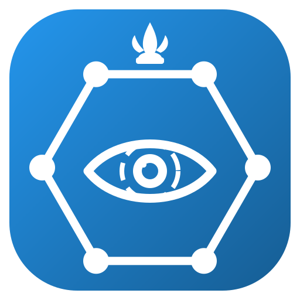
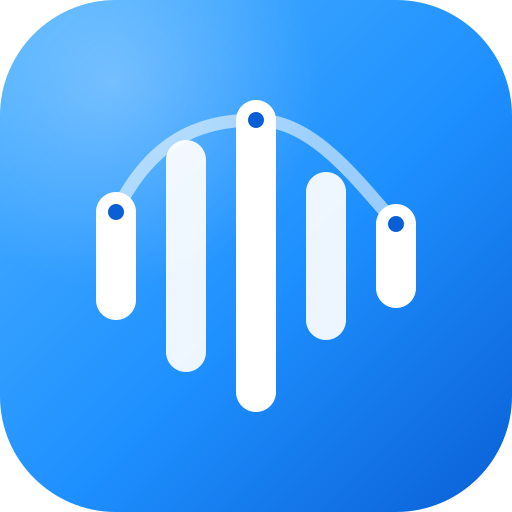

Business grounded
Customer needs, operational realities, and measurable value come before novelty. A system that nobody can run on a Tuesday morning is not finished.
Phnom Penh · Cambodia
I am Phirum — a banking professional and hands-on technologist. I build the unglamorous systems that operations teams live inside: infrastructure portals, AI telephony, and embedded computer vision — then make them clear enough that people actually use them.
My work sits at the intersection of financial services and technology. Banking taught me operational discipline — reconciliation, auditability, and the cost of an unclear process. Building taught me that most of those problems are solvable in software if you refuse to hide the complexity behind a demo.
Understand the real problem. Make the system clearer. Ship something people can actually operate.
Customer needs, operational realities, and measurable value come before novelty. A system that nobody can run on a Tuesday morning is not finished.
Test gates run in CI on every change, end-to-end suites boot the real services, and QA numbers are regenerated from the reports rather than typed into a README.
Every project states what it has not proven — carrier certification, real-driver validation, load and soak. Naming the gap is part of the engineering.
Three systems I designed and built end to end — each documented publicly, each with its own live documentation site. Open any of them and you get the architecture, the setup path, and an honest account of what has and has not been proven.

“Khmer Netra Hub — a portal for everything in your infrastructure, one hub at a time.”
Self-hosted infrastructure operations behind one login, one theme, and one audit trail. A single Nuxt application presents a portal shell — launcher, sidebar, permissions, notifications, audit — in front of a growing suite of operations subsystems. Each subsystem is a Nuxt layer that merges into one in-process build: no micro-frontends, no iframes, no module-federation remotes. One image, one deploy.
LISTEN/NOTIFY. No Redis, no message bus.
“Enterprise AI call center between the Cambodia Telco SIP trunk and the 3CX PBX agent pool.”
Five separated services plus a shared scenario-schema library. A visual studio edits call scenarios as graphs; a worker executes those graphs per call against a pluggable ASR/LLM/TTS provider; a voice gateway drives FreeSWITCH over the Event Socket and hands live calls to 3CX agents. Every service is self-contained — own build, tests, Dockerfile — and liftable into its own repository.
Carrier onboarding, 3CX trunk provisioning and TLS/SRTP hardening are external steps the repository documents but cannot self-certify. The bundled AI provider is a deterministic simulator; real providers plug into the worker's SPI.
“Low-cost, camera-based driver drowsiness detection designed for retrofit into older vehicles.”
Risk is measured from eyelid closure over time, not from a whole-face “does this look drowsy” classifier — because a face classifier trained on DDD learned to recognise drivers rather than drowsiness. Eye closure is the mechanism itself, and it is cheaper on device: the model input is a 32×32 eye patch.
.espdl, realistic for an ESP32-S3.Research prototype, not a certified automotive safety device. Splits are subject-independent by principle, so no driver — and no adjacent frame of one clip — leaks across train and test.
Every public repository is loaded straight from the GitHub API, grouped into focus areas and tagged by topic and language. New public work appears here without a site update — search it, filter it, or switch to the compact list.
I am open to thoughtful business collaboration — product partnerships, pilot deployments, enterprise integrations, and applied AI or infrastructure work.
Answers are generated on your device from a profile knowledge base. Nothing you type leaves the browser.